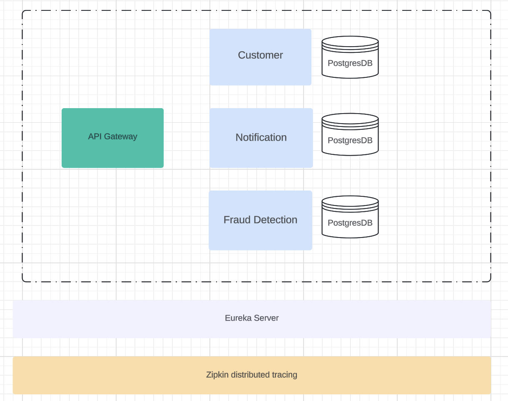

What does this Application Do?
The project will allow clients to receive notification of whether their newly registered customers have fraud history. Use cases of such app would be of great benefit for Banking and Finance industries.
High Level Design Architecture
How this Application works?
- All Microservices are registered with API-Gateway, including Eureka Server
- Client will make a request to Customer Service to register as new customer
- Internally customer service will use OpenFeign inteface to call Notification Service to verify whether client has any fraud history
- Once the fraud response is received, Notification Service will be called and response will sent back to Customer Service as complete flow
- Taces made through all the services call will be tracked via Distributed Tracking Server Zipkin